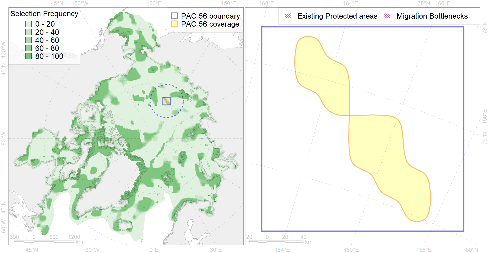

Region 56
Region 56
“ArcNet” scenario 33 achievement for region 56.
Use Accenter for advanced mode.

0
CFs inside of Region completely
1
CFs inside of Region at quarter
0
Complete-targets achievement by Region
2
Half-targets achievement by Region
| CF | Name | Target Achievement for Region | Proportion of Target Achievement in Region | Amount Proportion in Region |
|---|---|---|---|---|
| 7120 | II.1.2.5. East Siberian slope canyons | 65.5% | 61.8% | 26.9% |
| 7119 | II.1.2.4. East Siberian slope | 55.5% | 50.7% | 17.0% |
| 3058 | Multiyear Ice distribution in September in the East-Siberian Sea LME | 22.7% | 22.5% | 6.2% |
| 7031 | Lomonosov Ridge region | 4.9% | 3.4% | 1.1% |
| 7018 | Amerasian bathyal region | 5.5% | 2.1% | 0.7% |
| 4090 | Fish zoogeography, Arctic Region, Subarctic Transitional-Atlantic Province, Euro-Asian Bathyal District | 1.6% | 0.9% | 0.4% |
| 4096 | Range of the Glacial eelpout (Lycodes frigidus) | 2.0% | 0.5% | 0.2% |
| 4037 | Distribution of the Glacial cod (Arctogadus glacialis) (F34) | 1.2% | 0.3% | 0.2% |
| 3040 | Marginal Ice Zone distribution in July in the East-Siberian Sea LME | 0.4% | 0.4% | 0.2% |
| 4079 | Fish zoogeography, Arctic Region, Arctic Abyssal Province (11A -Scandian, 11B - Central-Arctic and 11C - Baffin Deep-sea Districts ) | 2.5% | 0.4% | 0.2% |
| 7026 | Eurasian shelf region | 1.0% | 0.4% | 0.1% |
| 4041 | Range of the Polar Cod (Boreogadus saida) (F35) | 0.4% | 0.1% | 0.1% |
| 9001 | polar bear of the AB (Arctic Basin) subpopulation distribution | 0.1% | 0.1% | 0.0% |
| 3031 | Marginal Ice Zone distribution in July in the Central Arctic LME | 0.1% | 0.1% | 0.0% |
| 2061 | Ringed seal circumpolar foraging areas as predicted by MIZ distribution | 0.1% | 0.0% | 0.0% |
| 3049 | Multiyear Ice distribution in September in the Central Arctic LME | 0.0% | 0.0% | 0.0% |